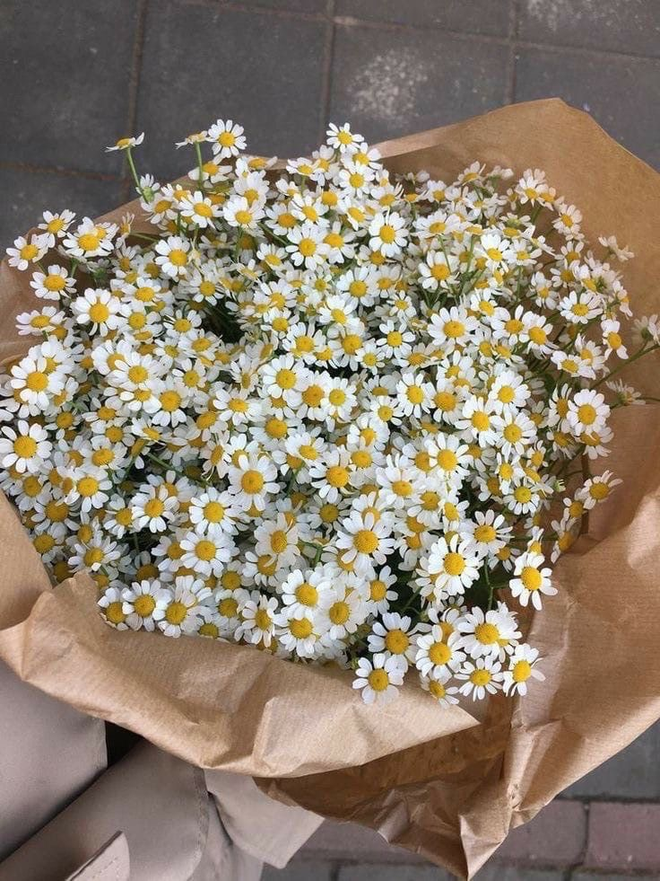

Ромашка — простой и нежный цветок, символ чистоты, юности и романтики. Её белые лепестки и жёлтая сердцевина напоминают о лете и беззаботности.
Ромашка — один из самых узнаваемых цветов в мире. В дикой природе она растёт повсюду: на лугах, полях, вдоль дорог. Но существуют и садовые сорта с крупными, махровыми соцветиями. Садовые ромашки называют «нивяник» — их цветы достигают 10-15 см в диаметре. Ромашка известна не только красотой, но и целебными свойствами: ромашковый чай успокаивает, снимает воспаление, помогает при простуде. В букетах ромашки выглядят трогательно и свежо, их часто дарят юным девушкам, а также используют в свадебной флористике для создания нежных, романтичных образов. В срезке ромашки стоят около 7-10 дней.